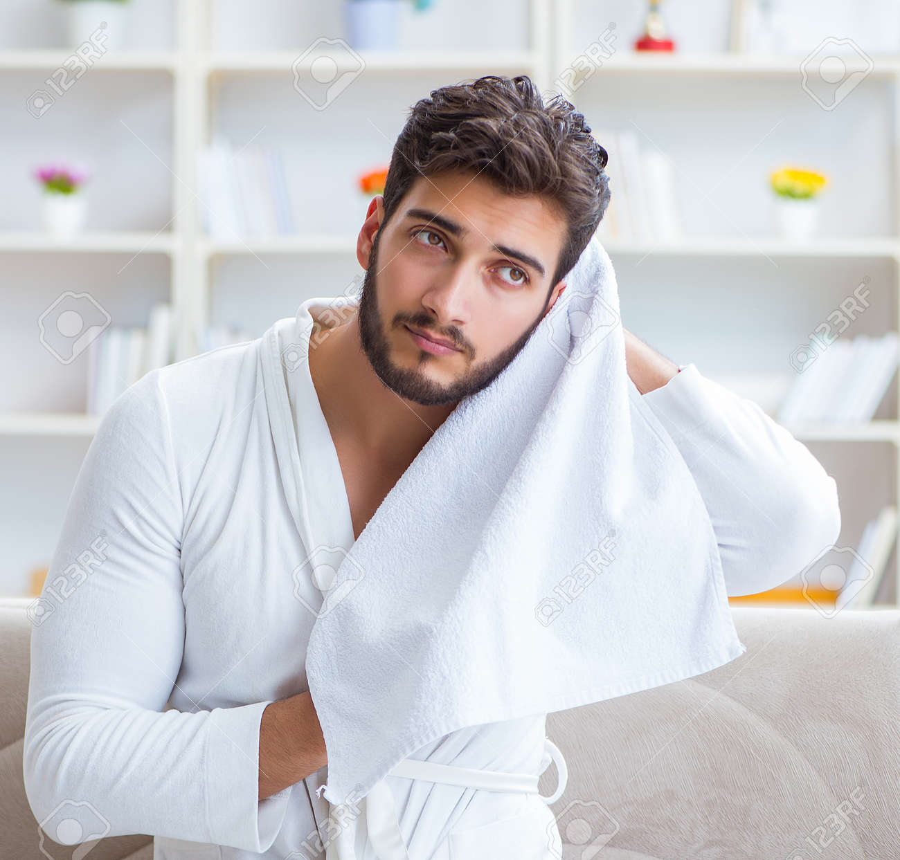

You might think that the first tip on a list of how to keep hair looking good would be to wash it daily.
But regular shampooing can easily dry out your strands, making them brittle and frizzy. Instead, start washing your hair every other day to restore your hair's natural strength and shininess.
You can adjust your hair-washing schedule to suit your particular texture and oiliness. Curly hair tends to need fewer weekly washes than straight hair, for example.
Make sure you're using the right hair-washing method, too.
There are plenty of ways to stall the hair-thinning process. One of them takes just a few minutes post-shower.
Start patting your hair dry, rather than tousling it with a towel. Rubbing your hair can create friction, which causes breakage of the strands.
Even if thinning isn't yet on your radar, you might want to try the hair-patting method to make styling easier. Broken strands aren't as easy to control and style as healthy, smooth hair.
If you can't get in for a haircut, your edges will always be what gives you away.
You don't want to give yourself a full-on haircut, of course. But if you buy a small razor, you can keep your edges manicured between visits to the barbershop.
In the past, you might've depended on your barber to keep your edges in order. Now, though, you can quickly buzz away neck fuzz and other messy-looking growth. This step will extend the life of your haircut so you don't have to go to the barber as frequently.
Even when the salons reopen, you can continue doing this, too. You'll end up saving money and time on hairstyling if you take care of this step yourself.